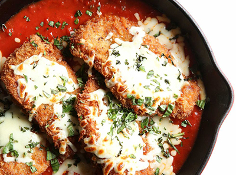
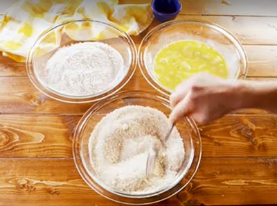
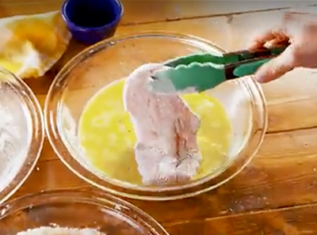
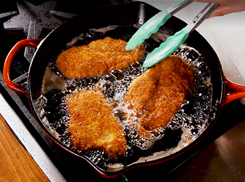
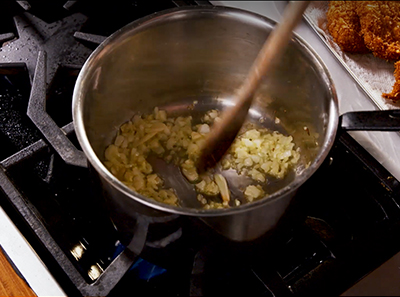
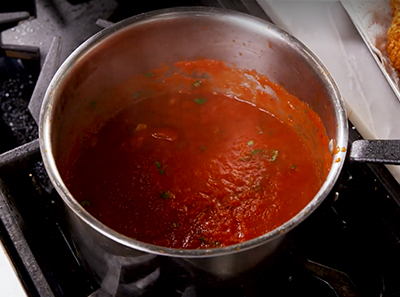
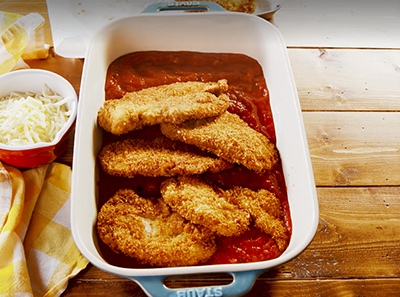
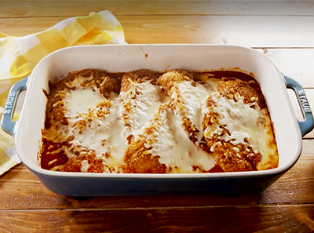
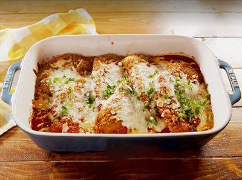

Chicken Parmesan
6 servings
Prep time: 15 minutes
Cook time: 1 hour
Total time: 1 hour 15 minutes
Ingredients
For the chicken
- 1 1/2 c. panko bread crumbs
- 1/2 tsp. garlic powder
- 1/4 c. freshly grated Parmesan, plus more for garnish
- 2 large eggs, beaten with 1 tbsp. water
- 1/2 c. all-purpose flour
- 1 1/2 lb. boneless skinless chicken cutlets
- Kosher salt
- Freshly ground black pepper
- Vegetable oil
- 1 c. shredded mozzarella
For the Marinara
- 2 tbsp. extra-virgin olive oil
- 1/2 small onion, finely chopped
- 4 cloves garlic, sliced
- 1 (28-oz.) can crushed tomatoes
- 1/4 c. water
- Kosher salt
- Freshly ground black pepper
- Pinch of crushed red pepper flakes
- 2 tbsp. freshly chopped parsley, plus more for garnish
Directions
- Preheat oven to 400˚F.
- Make chicken:
Prepare breading station with three large mixing bowls: one bowl with panko, garlic powder, and Parmesan mixed with a fork; another with the egg mixture; and the third bowl with flour.

- Season chicken with salt and pepper, then coat each piece of chicken in flour and shake off excess.
- Dip chicken into egg mixture and then into bread crumb mixture.

- Repeat steps 1-4 for remaining chicken and set aside on a plate.
- In a deep cast-iron skillet over medium-high heat, add 1/4" oil.
- When pan is hot, but not smoking, add chicken. Cook until golden brown, 5-7 minutes, flipping halfway through.

- Transfer to a paper towel-lined plate to drain.
- Meanwhile, make marinara:
In a medium pot over medium heat, heat oil.
- Add onion and garlic and cook until soft, 4 minutes.

- Add in tomatoes and water, season with salt, pepper, and red pepper flakes, and let simmer, 10 minutes.

- Remove from heat and stir in parsley
- Pour sauce into a 9x13" baking dish and place chicken in sauce.

- Top with mozzarella and bake until cheese is melty, 10-12 minutes.

- If desired, broil until cheese is golden, 3 minutes.
- Garnish with parsley and serve immediately.
